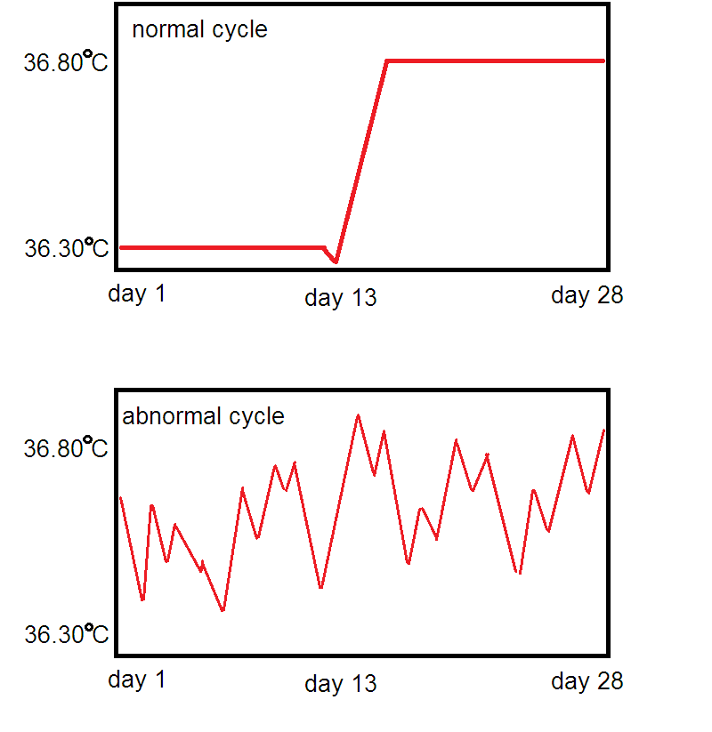

CHINESE MEDICINE AND ACUPUNCTURE FOR INFERTILITY:
OUR APPROACH TO YOUR FERTILITY SUCCESS
OUR APPROACH TO YOUR FERTILITY SUCCESS
Infertility patients are one of the common patients that visit me in my practice. And I absolutely love treating these patients knowing what I can provide them with Chinese Medicine and Acupuncture. The great majority of these patients are around the 40 year-old group. Many have put away their fertility goals for one reason or another. For some this would be their first attempt while for others it could be trying for a 2nd baby after the 1st one they already have. And for others, it is to overcome the repetitive failures from miscarriage. Whatever the situation, Chinese Medicine has something to offer and to bring them closer to their fertility success.
2 keys to fertility success:
In my practice I can summarize that the key to fertility success is for the most part only 2 things. The 1st thing is a balance of hormones. This means a good interchange between estrogen and progesterone spikes during different periods of a women's cycle. When estrogen should be high, it should be high, and when progesterone should be high, it should be high. When one hormone is high, the other should be low. The 2nd factor is normal blood flow of the female reproductive system. This guarantees that the reproductive organs will get adequate nutrition but also timely elimination of wastes and inflammatory factors as part of their cellular processes. An under-functioning reproductive system hence typically comes with retention of toxic waste materials leading to chronic inflammation of the pelvic organs. While the above 2 factors sound almost too common-sense, almost 100% of infertile female patients whom I see do not meet these 2 criteria.Hence I would say it is theoretically impossible for a women to be infertile if she has met these requirements. If the opposite is the case however, then either the male would have to be investigated or perhaps there are other insidious factors that are preventing pregnancy.
Regular hormone panels are not enough.
The fact of the matter is that most patients will have gone to their GP or gynecologist and be told that their blood work indicates their hormones are "normal". Experience tells us that such panels are nearly useless as the majority of women would have "normal" ranges but some number of these women would still be infertile. The reason is because hormone panels are not real-time assessments of a woman's hormonal change as it alters throughout a cycle. What I have all of my patients do when they begin their treatment with me is either provide me with at least 30 days of basal body temperature("BBT") charting to 2 decimals of a centigrade or begin charting at the outset of treatment. Again in almost nearly 100% of cases, their chart will lack the required biphasic hormonal change pattern that should be present in a healthy menstrual cycle.

Getting your own BBT chart
A special thermometer typically called a "BBT thermometer" or "basal body temperature thermometer" and specifically one that reads to 2 decimals of a centigrade is required for plotting your temperature. Most pharmacies carry such products, which look almost identical to typical digital thermometers, except being able to read to 2 decimals. The temperature reading is done on a daily basis as the first thing in the morning before one gets out of bed. It can be done either orally, rectally or vaginally. Vaginally is recommended as pertains to the treatment of infertility. The readings can be recorded on paper or on many free apps such as Kindara.
3 months as 1 treatment cycle
The quality of a woman's menstrual cycle as indicated by her BBT chart is inextricably tied to the likelihood of pregnancy. Generally speaking if her chart does not meet requirements, the chances of pregnancy are almost 0 as the body's self-defense mechanisms will kick in to prevent pregnancy from occurring because it would instead to be detrimental to both baby and mother down the road if pregnancy does occur. Therefore our goal in Chinese Medicine is to restore the health of the reproductive cycle to the optimal level within a 3 month period so by the end of roughly 90 days of treatment her chart will look as close to standard as possible. A healthy BBT indicates that her hormone levels and interchange are working normally and her reproductive circulation is running smoothly. At this point the chances of a natural pregnancy will be at an all-time high and the chances of a successful IVF will also be at an all-time high. It's a win-win situation.